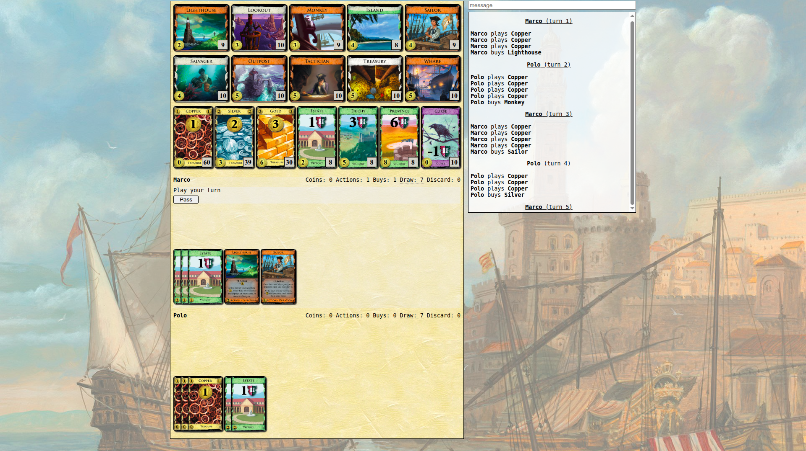

Projet : Dominion Seaside
Contexte
Dans le cadre d’un projet de développement d'application en JAVA et JAVAFX, nous avons conçu un jeu basé sur le Dominion, extension Seaside. L’objectif était, en deux parties, d'implémenter la logique du jeu avec une interface préexistante. Dans un second temps, il fallait créer une interface en prenant la partie logique en "blackbox".
Objectif
L'objectif principal était de rendre utilisable et de designer une interface à partir d'un code déjà présent. Contrairement à d'autres projets que j'ai pu réaliser précédemment, je me suis concentré sur la qualité du code, la validation de nombreux tests ainsi que sur le respect strict des consignes. L'application devait de cette manière, être robuste et testable tout en conservant une cohérence dans la gestion des évènements.
Bilan & Compétences
Ce projet m'a permis de développer mes compétences dans l'élaboration d'une application à travers les diverses phases de test ayant suivi l'implémentation de conceptions simples à travers des cartes aux effets différents. Ainsi, j'ai eu à respecter les besoins décrits par les règles d'un jeu faisant évoluer l'application tout au long de ce projet.
